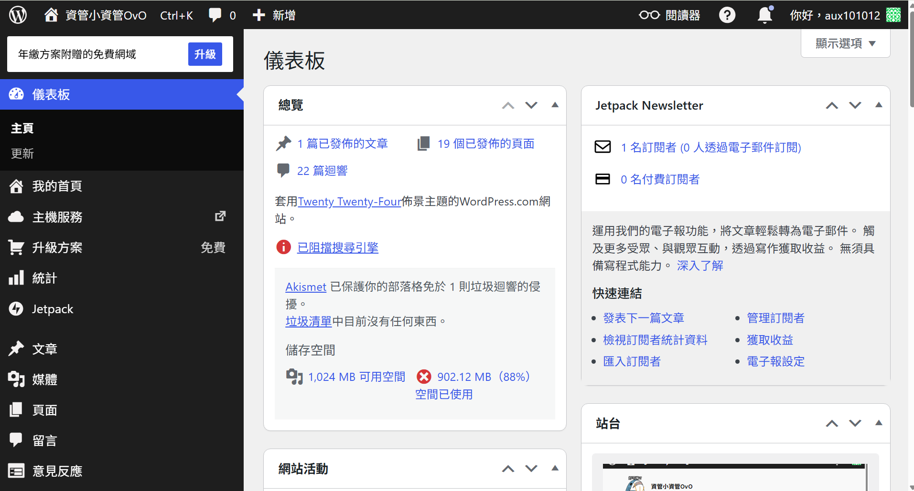
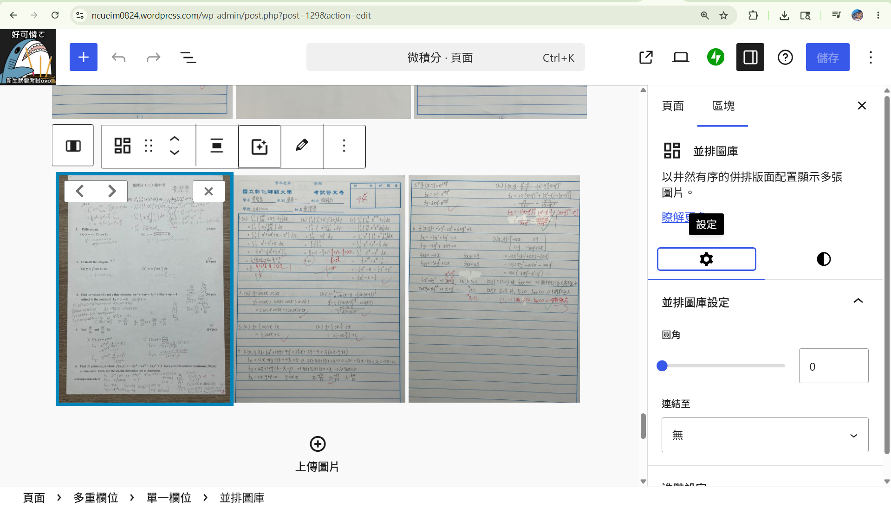
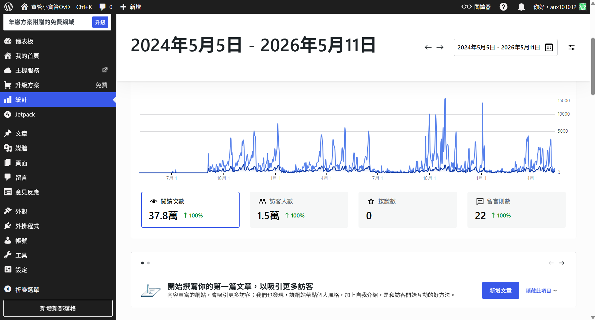
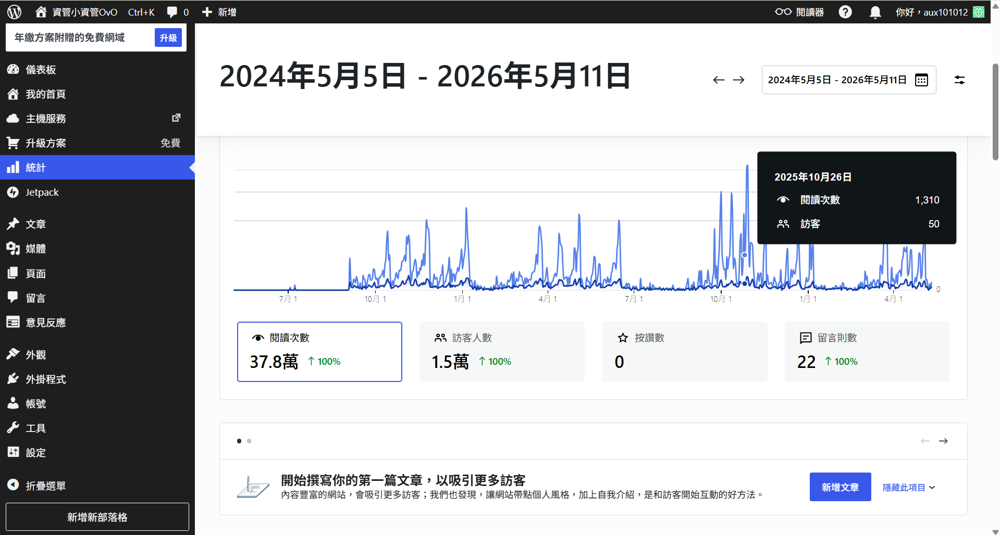

系上的考古題網站「資管小資管」長年以來面臨沒有人接管的困境，導致每次同學們想要參考、複習考古題時，往往只能看到很久以前的舊題目。
看著這個平台的資源被閒置、浪費，我感到十分可惜。同時，我也希望能透過自己微薄的力量，讓未來的學弟妹們有近年考古題可以當作練習。因此，我主動聯繫了當初建立該網站的學姊。
學姊得知有人願意挺身而出接手經營時感到非常高興，便二話不說直接將網站的管理員權限移交給我。自從我正式接手網站後，便積極將平台推廣給越來越多同學知道，在大家的熱烈利用下，網站的到訪次數也一次次成功刷新歷史紀錄。
其實網站管理員的工作並沒有大家想像中的繁複與困難，日常的核心維運工作主要包含以下五大面向：
以下為「資管小資管」網站後台管理與流量分析之相關實績截圖：

[ 網站後台介面.png ]
[ 上傳考古題.png ]
[ 網站到訪人數.png ]
[最高紀錄.png ]